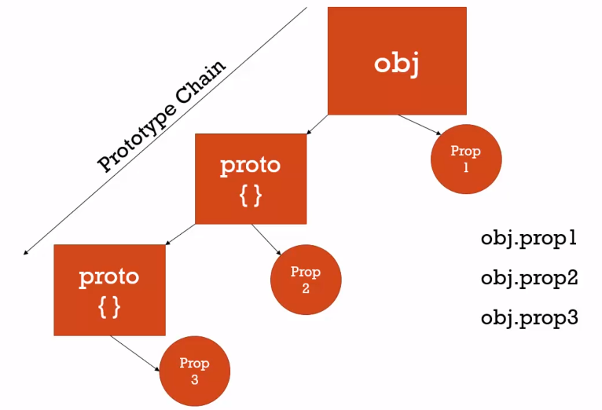
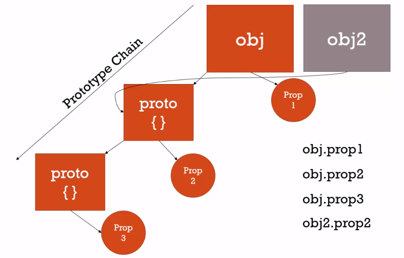

古典與原型繼承
這堂課將介紹 JavaScript 中，和其他程式語言很不一樣的觀念，物件導向 (Object-Oriented) 與原型繼承 (Prototypal Inheritance)
Classical Inheritance v.s Prototypal Inheritance
首先，我們先來了解一下什麼是繼承 (Inheritance)，其實就是一個物件取得另一個物件的屬性 properties 和方法 method。
而繼承又分為兩種，一種是 Classical Inheritance，其他程式語言如 C#、Java 所使用的物件繼承方式 ; 另一種則是 JavaScript 所使用的繼承方式，Prototypal Inheritance。
Prototype Chain 原型鍊
延續前面的說法， JavaScript 是一個透過 Prototypal Inheritance 來讓物件取得另一個物件的屬性 properties 或方法 method，先來讓我們看一下底下這張圖:

首先在記憶體中有一個叫做 obj 的物件，如果它底下有一個名為 prop1 的屬性，我們可以透過點 . (dot operator) 來取得這個物件屬性 obj.prop1。
在前面 call()、bind() and apply() 的課程中，我們知道物件在被建立時，會有一些預設的屬性和方法，所有物件 (包括函式) 都會有一個 prototype 屬性，這裡我們先稱它為 proto，接著，當我們要找一個名為 prop2 的屬性時，在 obj 身上找不到，便會向 proto 去找，如果找到了，一樣可以透過點 . (dot operator) 來指向它 obj.prop2，而不須使用 obj.proto.prop2 來使用它。
然而，如果找不到就會繼續向 proto 的 prototype 找下去，前面提到，每個物件都有 prototype，而 obj 的 proto 也不例外，所以當我們輸入 obj.prop3 時，在 obj 與 proto 都找不到便會向 proto 的 prototype 找下去，並回傳 obj.proto.proto.prop3 給我們。
在物件上尋找屬性找不到便向 prototype 查詢的形式便會形成一個原型鍊 Prototype Chain，那麼一直找下去會到什麼時候呢 ? 會一直指向原型直到返回 null 為止。

接著我們看到第二張圖，物件的 prototype 其實是可以分享給其他物件的，如圖中的第二個物件 obj2，它將 prototype 同樣指向 obj 的 proto，所以當我們輸入 obj2.prop2 時，其實會和 obj.porp2 同樣指向記憶體中相同的位置。
我們其實不用把這個觀念想得太複雜，當我們呼叫物件的屬性時，如果找不到便會向它的 prototype 尋找，找到了同樣可以把它當作物件的屬性來呼叫。
範例
讓我們透過範例進一步了解這個概念，這個範例其實不會在一般的開發中這麼使用，因為現代瀏覽器提供了其他方式來使用它，如果按照範例使用，還會造成開發應用程式的效能問題。
1 | var person = { |
再次強調不要在實際開發上這麼使用，這只是為了方便了解原型鍊 Prototypal Chain 的概念而已。
首先，為了讓新建立的物件 john 使用到 person 的方法 getFullName，我們要將 john 的 prototype 指向 person，在 JavaScript 我們可以透過兩個下底線 _ 包住 proto __proto__ 來指定，這麼一來輸入 john.getFullName() 時因為找不到，就會沿著 Prototypal Chain 找到 person 的 getFullName 方法了。
1 | // don't do this EVER! for demo purpose only !!! |
那麼如果在這之後單純呼叫物件 john 的屬性呢 ?
1 | console.log(john.firstname); // John |
會發現結果還是物件 john 自己的屬性而不是 person 的 Default，因為原型鍊的概念是，我在物件本身找不到時，才會沿著 prototype 往上尋找。
接著我們來看到另一個範例，首先，建立一個只有 firstname 屬性的物件 jane，同樣地，我們將它的 portotype 指向 person，所以當它呼叫 getFullName 方法時，因為物件本身沒有，自然就會往 protype 物件 person 尋找 ; 但是該物件並沒有 lastname 屬性，所以延續前面提到的，當物件沒有對應的屬性和方法時，就會往 prototype 尋找，結果就會是 person.lastname 的 Default 了。
1 | var jane = { |